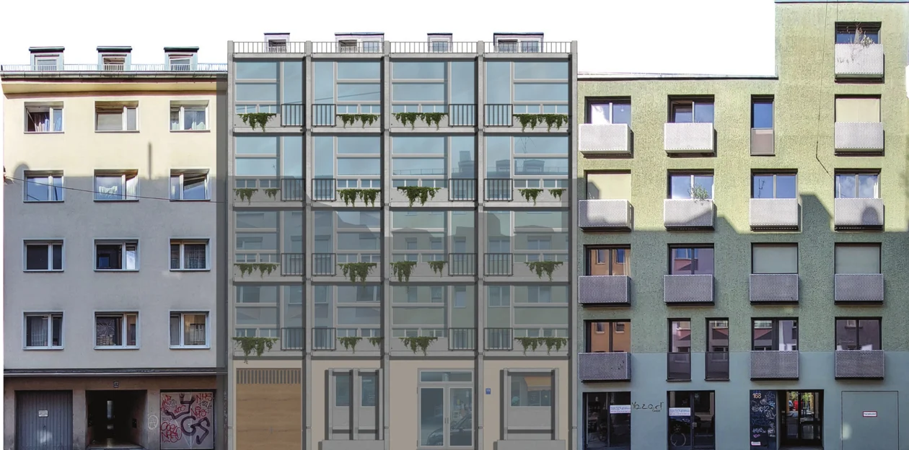
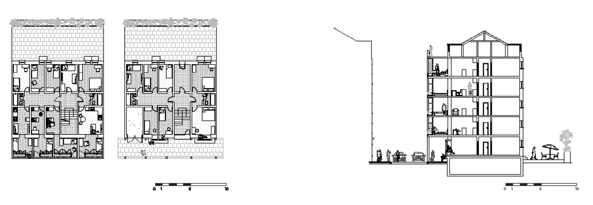

Studienprojekt · Wohnen
Just Wallpaper
Eine Bestandsaufnahme erfasst die Räume und die Tragstruktur eines Mehrfamilienhauses in der Schwanthalerstraße. Auf dieser Grundlage untersucht das Projekt, welche Veränderungen der Bestand zulässt.

- Ort
- Schwanthalerstraße 170, München
- Kontext
- Hochschule München · Studienprojekt
- Semester
- Wintersemester 2024/25
Die Zeichnung
Grundrisse und Schnitt zeigen die Wohnungszuschnitte im Zusammenhang mit der Gebäudestruktur.

Zeichnung vergrößernDer Raum
Die Bestandsansicht setzt die geplanten Änderungen in Beziehung zu den Nachbargebäuden.